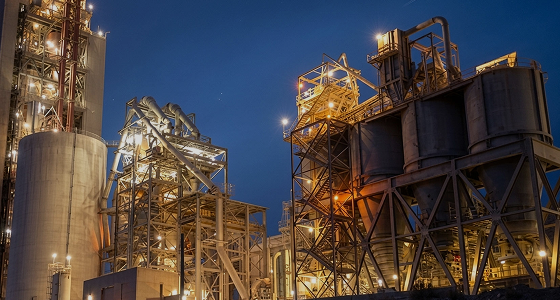
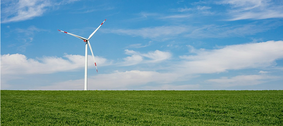
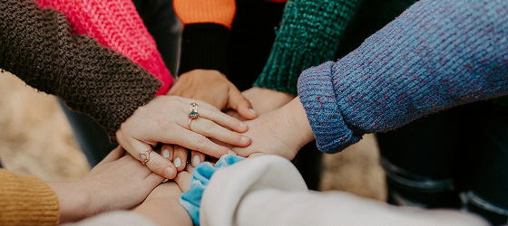
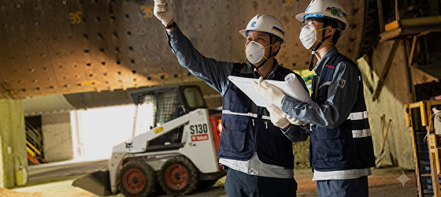

ESG경영
ESG경영
지속가능경영
지속가능한 미래를 향한
창조적 도전을 이어갑니다.

추진방향
-

01환경경영으로 행복한 세상을 만들겠습니다.
온실가스 감축을 위한 자발적 협약 체결, 폐열발전을 통한 에너지 절약과 순환자원 재활용, 친환경 건설자재의 개발, 완벽한 집진 설비를 통해 먼지 없는 청정공장을 실현합니다.
-

02나눔경영으로 따뜻한 세상을 만들겠습니다.
산업보국과 인간존중의 경영이념은 한일시멘트가 변함없이 추구하고 실천해온 철학입니다. 투명하고 건실한 기업활동과 다양한 사회공헌 활동을 통해 기업의 사회적 책임을 다하겠습니다.
-
03
투명하게 관리하고 공정하게 경쟁하겠습니다.
전자 회계시스템에 의한 투명한 회계처리 체계, 사외이사 제도 적극 활용 등을 통해 경영 투명성을 확보합니다. 임직원들은 공정하게 직무를 수행하며 자유롭되 책임을 다하는 시장경제질서를 지켜나가겠습니다.
비전과 전략
한일시멘트는 ESG 경영을 구현하기 위한 중장기로드맵을 마련하여 ESG 운영체계를 단계적으로 개선하고자 합니다. 특히 '탄소중립 성장(Carbon Neutral Growth)'을 포함한 친환경 가치에 중점을 두고 시멘트 업계의 선도기업으로 거듭날 계획입니다.

Change and Innovation with ESG 2030
전략 과제 실행을 통한 ESG 경영체계 구축 및 고도화-
기후 변화 대응
2050 탄소중립 질소산화물 감축
-
안전관리
중대재해 Zero 달성
-
친환경 제품 및 사업
친환경 제품 및 사업 확대
-
사회공헌
사회공헌 체계 고도화
ESG등급
당사는 한국ESG기준원이 실시하는 2025 ESG평가에서 종합등급 B+를 획득하였습니다.
-
B+
종합
KCGS 2025
-
A
환경
KCGS 2025
-
A+
사회
KCGS 2025
-
B
지배구조
KCGS 2025